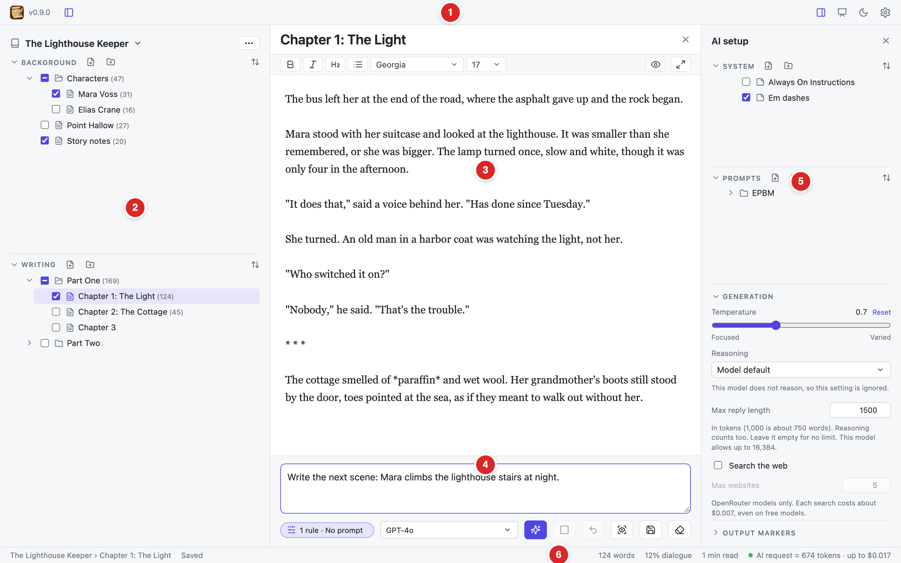

Welcome to SJB Writer
A writing app that runs on your own computer, with AI help only when you ask for it.
What SJB Writer is
SJB Writer keeps your books in plain text files on your computer and shows them in your web browser. It works without the internet.
When you want AI help, you choose exactly what the AI sees: your rules, your notes, your chapters, and an instruction. The AI then writes at your cursor. You can use online models through OpenRouter, or models that run on your own Mac through Ollama. AI is optional, and you can turn it off completely.
Starting the app
- Open the Terminal in the SJB Writer folder.
- Type
cd appand press Return. - Type
python3 app.pyand press Return. - Open http://127.0.0.1:5050 in your browser.
Keep the Terminal window open while you write. To stop the app, go back to the Terminal and press CtrlC.
The screen at a glance

- Top bar. On the left: the logo (click it to close the document), the version, and the sidebar button. On the right: the AI setup panel, Visual layout, light/dark mode, Help, and Settings.
- Sidebar. Your project and its two sections: Background (notes) and Writing (the book). See Projects and the sidebar.
- Editor. The title and the text of the open document. See Writing.
- AI dock. The instruction box, the model, and the Generate button. See Working with AI.
- AI setup panel. Rules (System), saved instructions (Prompts), and generation settings.
- Status bar. Where you are, the save state, words, dialogue, reading time, and the size and cost of the next AI request.
Your first steps
- Pick a project. Click the project name at the top of the sidebar, or use the project ⋯ menu to create one.
- Create a document. Click the page-with-a-plus button next to Writing and give it a title.
- Write. The app saves for you. ⌘S saves right away.
- Optional: add AI. Open Settings, paste an OpenRouter key or install Ollama, and pick a model. Then type an instruction and click Generate.
Keyboard shortcuts
| Keys | What it does |
|---|---|
| ⌘S | Save now |
| ⌘E | Markdown preview on or off |
| ⌘↵ | Generate with the AI |
| Esc | Stop the AI, leave zen mode, or close the open window |
| ⌘\ | Show or hide the sidebar |
| ⌘⌥\ | Show or hide the AI setup panel |
| ⌘⇧F | Zen mode on or off |
| Tab / ⇧Tab | Indent or outdent in the editor |
On Windows and Linux, use Ctrl where this table shows ⌘.
All help pages
WritingOpen a document, write, and let the app save for you.
Projects and the sidebarKeep each book in its own project, and its notes and chapters in order.
Working with AIChoose what the AI sees, tell it what to write, and keep control of the result.
Models and settingsConnect an AI model, and find every setting in one window.
Keeping your work safeNothing you write is lost by a crash, a bad save, a wrong click, or another program.
Your filesYour books are plain Markdown files that you own, wherever you keep them.
Look and layoutLight or dark, your accent color, and a layout that fits any window.